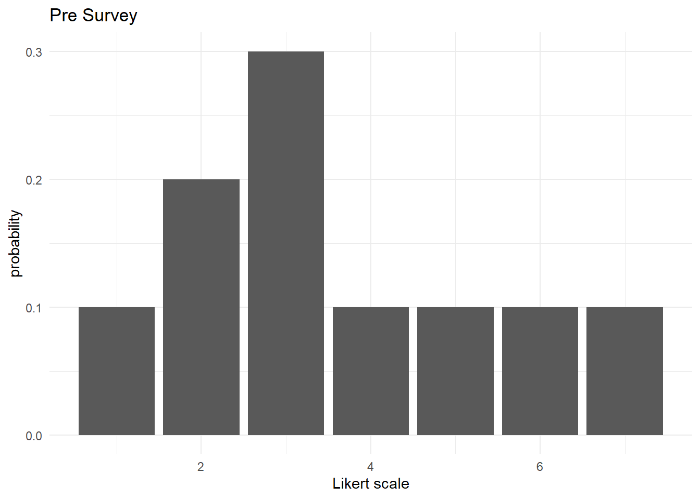
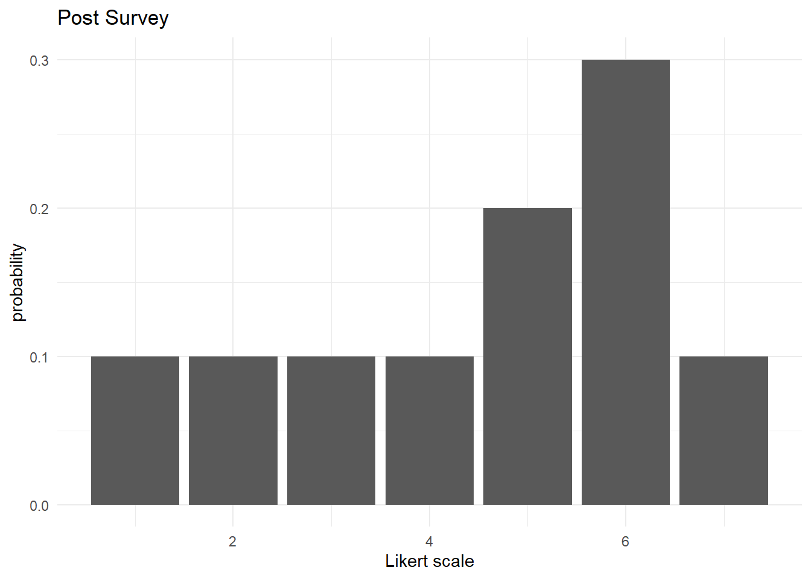

library("tidyverse")Abstract
Here I argue that we should use KL Divergence as a metric to measure survey data that was collected as Likert scales. In this blog post, I will discuss Likert scales, motivate analyses done through the response distributions, and offer guidance on using KL Divergence as a study metric for academic work.
Introduction
When my colleagues and I do research in the realm of the social sciences, we tend to survey our students in hopes of establishing the learning environment and measuring our interventions in the classroom. One scheme is to deploy pre and post surveys at the beginning and end of the term respectively. To ease the survey taker, some of our survey questions are phrased as Likert scales: “On a scale from 1 to 7, rate …”.
Without loss of generality, this blog post will assume a Likert scale from 1 to 7 and that “1” is a label for the worst outcome and “7” is a label for the best outcome.
Likert Scales
TODO: Describe Likert Scales
Literature search too?
But let me rhetorically ask this:
- Does it make sense to average or weighted mean of survey responses from Likert scales?
- Would a response of “6” really double a response of “3”?
Of concern, most responses are simply integers; for example, a response such as “3.5” might be highly unusual (or even impossible based on the survey tool). Mathematically, we are not using dense numbers such as real numbers.
Likert scales act more like categorical labels. These labels do remind us of ordinal numbers—“first”, “second”, “third”, etc.—but in the opposite direction from “worst” to “best”.
Instead of conventional point statistics such as the mean or median, I suggest focusing on the distribution of the survey responses.
KL Divergence
This view of relative entropy was introduced in the field of information theory back in 1951. For our purposes, for Likert scale \(X = \{1, 2, 3, 4, 5, 6, 7\}\), we have a probability distribution \(p(x)\) for the pre-survey response and a probability distribution \(q(x)\) for the post-survey response. In this discrete setting, we define the KL Divergence from \(P\) to \(Q\) as
\[D_{\text{KL}}(Q||P) = \displaystyle\sum_{x\in X} q(x) \ln \left(\frac{q(x)}{p(x)}\right)\]
This is the expectation of the logarithm of the ratio of probability values.
TODO: edge cases
What if \(p(x) = 0\)? What if \(q(x) = 0\)?
Methods
Example
Suppose that we conducted a pre and post survey and received survey results that had the following probability distributions \(P\) and \(Q\) respectively.
x <- 1:7
p_x <- c(0.1, 0.2, 0.3, 0.1, 0.1, 0.1, 0.1)
q_x <- c(0.1, 0.1, 0.1, 0.1, 0.2, 0.3, 0.1)
prob_tables <- data.frame(x, p_x, q_x)

Then the KL Divergence going from \(P\) to \(Q\)
\[(0.1)\ln\frac{0.1}{0.1} + (0.1)\ln\frac{0.1}{0.2} + (0.1)\ln\frac{0.1}{0.3} + (0.1)\ln\frac{0.1}{0.1} + (0.2)\ln\frac{0.2}{0.1} + (0.3)\ln\frac{0.3}{0.1} + (0.1)\ln\frac{0.1}{0.1}\]
P_to_Q <- rbind(p_x, q_x)
philentropy::KL(P_to_Q, unit = "log")Metric: 'kullback-leibler' using unit: 'log'; comparing: 2 vectors.kullback-leibler
0.2890372
Session Info
sessionInfo()R version 4.4.2 (2024-10-31 ucrt)
Platform: x86_64-w64-mingw32/x64
Running under: Windows 10 x64 (build 19045)
Matrix products: default
locale:
[1] LC_COLLATE=English_United States.utf8
[2] LC_CTYPE=English_United States.utf8
[3] LC_MONETARY=English_United States.utf8
[4] LC_NUMERIC=C
[5] LC_TIME=English_United States.utf8
time zone: America/New_York
tzcode source: internal
attached base packages:
[1] stats graphics grDevices utils datasets methods base
other attached packages:
[1] lubridate_1.9.3 forcats_1.0.0 stringr_1.5.1 dplyr_1.1.4
[5] purrr_1.0.4 readr_2.1.5 tidyr_1.3.1 tibble_3.2.1
[9] ggplot2_3.5.1 tidyverse_2.0.0
loaded via a namespace (and not attached):
[1] gtable_0.3.6 jsonlite_1.8.9 compiler_4.4.2 Rcpp_1.0.12
[5] tidyselect_1.2.1 scales_1.3.0 yaml_2.3.10 fastmap_1.2.0
[9] R6_2.6.1 labeling_0.4.3 generics_0.1.3 knitr_1.50
[13] htmlwidgets_1.6.4 munsell_0.5.1 philentropy_0.9.0 pillar_1.10.2
[17] tzdb_0.5.0 rlang_1.1.5 stringi_1.8.4 xfun_0.52
[21] timechange_0.3.0 cli_3.6.3 withr_3.0.2 magrittr_2.0.3
[25] digest_0.6.37 grid_4.4.2 rstudioapi_0.17.1 hms_1.1.3
[29] lifecycle_1.0.4 vctrs_0.6.5 evaluate_1.0.3 glue_1.8.0
[33] farver_2.1.2 colorspace_2.1-1 rmarkdown_2.29 tools_4.4.2
[37] pkgconfig_2.0.3 htmltools_0.5.8.1